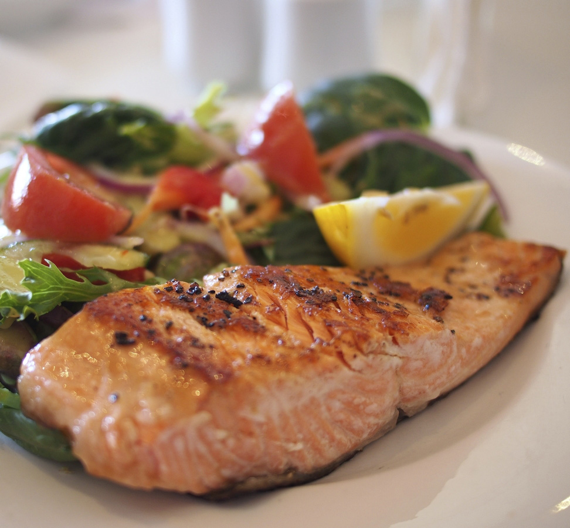

Baked Salmon

Description
A tasty seafood dish that is easy for beginning cooks to make!
Ingredients
- 6 tbsp olive oil
- 2 cloves minced garlic
- 1 tbsp lemon juice
- 1 tbsp chopped parsley
- 1 tsp dried basil
- 1 tsp salt
- 1 tsp black pepper
- 2 salmon fillets
Steps
- Whisk olive oil, garlic, lemon juice, parsley, basil, salt, and pepper in a bowl.
- Put salmon fillets in a baking dish. Pour marinade over them, cover and put in the fridge for an hour. Occasionally, turn them over.
- Preheat oven to 375 degrees F.
- Put salmon fillets on a large piece of aluminum foil. Put a spoonful of marinade on top and fold foil. Put the packs on a baking sheet.
- Bake for around 35-45 minutes.